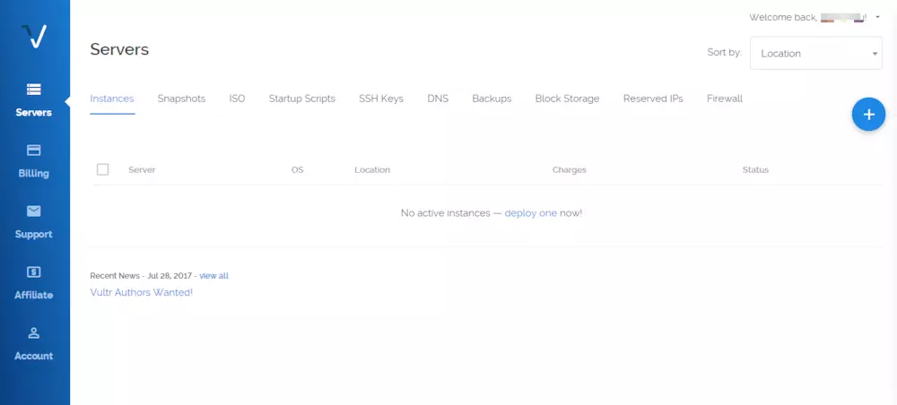

在这个教程里，你会学习到如何注册、使用 VPS 服务器，并利用它来搭建一个几乎无限流量的 VPN 服务。
VPS服务器（虚拟专用服务器）（"Virtual Private Server"，或简称 "VPS"）是利用虚拟服务器软件(如微软的Virtual Server、VMware的ESX server、SWsoft 的Virtuozzo)在一台物理服务器上创建多个相互隔离的小服务器。
对你来说相当于一台架设在云上的电脑，拥有一个固定、独立的IP，你可以通过远程连接使用它。
VPS服务器是一种介于传统虚拟主机和独立主机之间的特殊服务器托管技术，它通过特殊的服务器管理技术把一台大型Internet主机虚拟化成多个具有独立IP地址的服务器系统，这些系统无论从性能、安全及扩展性上同独立服务器没有实质性的差别，而费用仅相当于租用独立服务器的1/4或1/5，并且无须额外支出后续的硬件维护管理成本 。
VPS服务器拥有传统虚拟主机所不具备的系统独立管理权，解决了那些既需要独立主机性能、财力又不够充裕的网站的运营发展问题，无疑是一种比较实惠的选择。
优点：便宜！！最低500G流量，年购19.99美刀，使用优惠码还可以再减1刀左右。相当于每月10元。这价格已经比大多数VPN便宜了。
支持支付宝交易！支持30天内退款 一般一个工作日内就能回复，支付宝收到2～3天。
一键配置shadowsocks！如果使用搬瓦工，那后面的内容都不用看了，点下面的链接注册即可。
点击注册：https://bandwagonhost.com/
数据中心：美国西雅图、佛罗里达、洛杉矶、荷兰 套餐价格：64MB内存年3.99美元 / 96MB内存年4.99美元/128MB内存年5.99美元/512MB内存年9.99美元 简单介绍：IT7官方旗下的低价VPS主机产品，拥有速度较好的西岸亚利桑那州机房，最低年付仅需3.99美元，我们可以用来学习、工作项目演示，以及需要支持PPP/TUN搭建工具使用需求。拥有4个数据中心，而且可以自由切换IP，更换不同的IP，解决IP被封问题。
数据中心：日本、洛杉矶、英国、法国、德国、荷兰、澳大利亚等14个机房
套餐价格：KVM 768MB 15GB SSD 1TB月流量 最低$2.5/月
简单介绍：Vultr作为全球最大的游戏主机提供商背景之一，上线之后以高质的性价比、12个数据中心，以及新注册账户赠送5美金的账户使用金优惠促销，吸引广大的用户。作为我们用户，日本、洛杉矶等数据中心速度较好，如果有需要海外其他机房也可以在其12个数据中心中选择到适合自己的。
打开后，在下图所示位置填写你的邮箱地址，并设置密码，填完后点击"Create Account"（创建账户）。
注意：密码要求至少十位，而且必须包含大写字母、小写字母和数字。
然后你的邮箱会收到一封Vultr发来的激活邮件，点击"Verify Your E-mail"（验证邮箱），如下图
激活完成，我们便登录账户，进入后台，干净简洁的全英文界面，侧栏翻译见下图
首先我们进入"Billing"（账单），可以看到我们这里支持六类支付方式： 信用卡、PayPal、比特币、支付宝、微信、礼物码。选择一种方式支付即可。
点击Vultr后台右侧的蓝色加号，进入购买页面

购买VPS，首先选择机房位置，我建议选择如下之一："New York (NJ)"（纽约）、"Los Angeles"（洛杉矶）、"Singapore"（新加坡）、"Tokyo"（东京）。其中，目前仅纽约机房有2.5美元方案。
如何选择最适合我的机房？请前往这里下载测试下载文件测试
选择VPS系统，选择你熟悉的操作系统。如果都不熟悉建议选 Ubuntu 或 CentOS, Windows 因为不在本教程涉及范围内，所以也不建议选择。
购买需要的配置，注意如果标注 ipv6 可能是仅支持 ipv6，购买时请注意看说明
此处有免费的IPv6地址和免费的内网IP可选，付费的自动备份和付费的DDOS保护可选，此页不懂就都不用选
填写主机名，最好是英文的，点击"Deploy Now"（现在部署），即可建立VPS。
在"Servers"（服务器）页面即可见到一台刚创建的VPS
点击服务器状态右边的"..."，下拉菜单中可以看到：
VPS管理界面
此时VPS购买就算完成了，如果不用VPS把它删除（销毁）即可（就会停止计费了）。
注册完，相应的服务商将告知你如何登录服务器。
打开你的命令行，进行相应操作以登录服务器。
Shadowsocks 属于socks5 代理，稳定性好，抗干扰能力强。
在CentOS中运行下面两条命令就完成了shadowsocks的安装了：
yum install python-setuptools && easy_install pip
pip install shadowsocks
创建一个配置文件 /etc/shadowsocks.json，写入以下内容：
{
"server":"0.0.0.0", #服务器IP地址
"server_port":8388, #服务监听端口
"local_port":1080, #本地连接端口
"password":"barfoo", #加密传输使用到的密码
"timeout":600, #连接超时时间
"method":"aes-256-cfb" #加密算法
}
使用时请把注释去掉
运行下面的命令来启动和停止后台服务：
ssserver -c /etc/shadowsocks.json -d stop
各个平台使用的客户端都有差异，但是用到的信息就这些：
－ 服务器IP: 不是上面的0.0.0.0，是你申请的VPS，会提供一个ip。打开网站，登录，找到它
－ 端口(port): 8388
－ 协议类型: aes-256-cfb 一般默认就这个，不用换。但还是要看一眼。
－ 密码(password): barfoo
连接，欢呼。